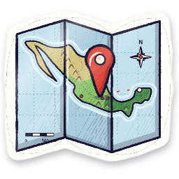
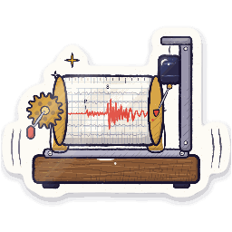
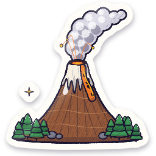
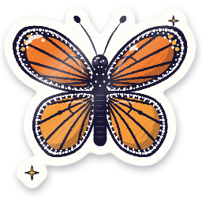
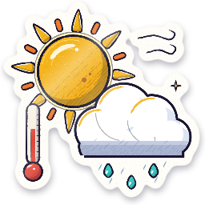
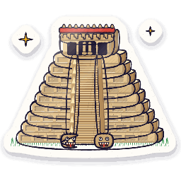
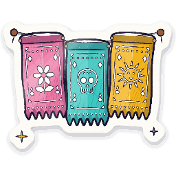
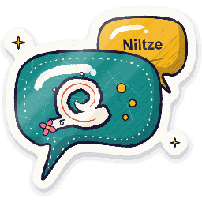
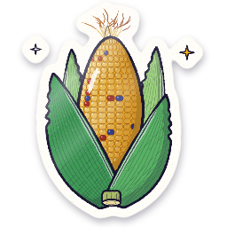
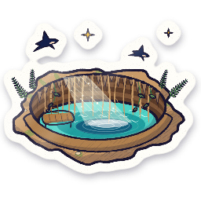
Apunta la cámara al mapa impreso
Un país que se mueve.
Explora las fuerzas que mueven, sacuden y dan vida a México: placas tectónicas, ondas sísmicas, volcanes, ecosistemas y clima en tiempo real.
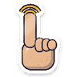
¿Quién explora?
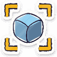
¿No tienes el mapa impreso? Imprime el marcador AR